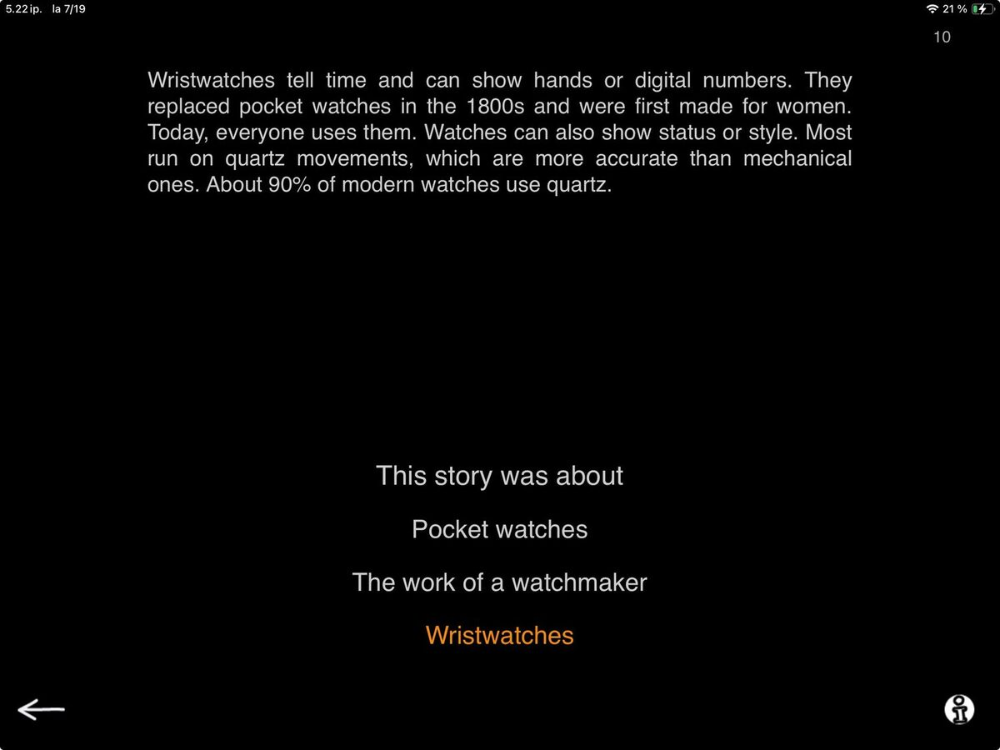

The fourth exercise in the Comprehension category is called Listen to a Story. If you’ve already used Questions Based on Text, this task might feel familiar. Here the focus shifts from identifying small details to grasping the broader theme of a longer passage. It’s your go-to option when you want more substantial content while still keeping the listening task simple and well-structured.

In Listen to a Story -task, you’ll see a short non-fiction text along with three possible answer choices. You read the text aloud to your patient and then present the options. Here’s an example:
“Wristwatches tell time and can show hands or digital numbers. They replaced pocket watches in the 1800s and were first made for women. Today, everyone uses them. Watches can also show status or style. Most run on quartz movements, which are more accurate than mechanical ones. About 90% of modern watches use quartz.”
After reading the passage, you ask your patient: What was the story about? And prompt them to select an answer from the options shown:
– Pocket watches
– The work of a watchmaker
– Wristwatches

Only one option corresponds directly to the content of the story (wristwatches), but the others are plausible enough to require careful listening. This encourages your patient to focus, retain details, and evaluate the information logically.
On Level 1, each story is under 100 words. On Level 2, texts range from 100 to 300 words. With the latest update, both levels now include more than 20 unique texts. All nonfiction, all structured to support auditory reasoning.
Just text and options? Yes and No.
At the surface level it is very simple. You read a text, give option on what the story was about and the patient tells you what they think is the correct answer. They are either right or wrong. End of story? Not at all!
This listening task is an excellent tool for targeting auditory memory, sustained attention, and verbal recall. After your patient selects their answer, you can invite them to explain their choice: How did you know the text was about wristwatches and not pocket watches? Reflection supports skills like verbal memory, organizing information, and planning and expressing a persuasive response. Always a good idea to take the opportunity to include elements that encourage reciprocal interaction!
You can turn this into a stronger memory challenge by sharing the answer options before reading the text. For example, say:
“I’ll read a short passage. It’s either about pocket watches, the work of a watchmaker, or wristwatches. When I’m done, tell me which one it was about.”
Working through several tasks in a row can also provide valuable insight into what the patient struggles with when comprehension breaks down — both in therapy and in real-life situations. Learning when and how confusion arises can reveal important patterns, whether it’s fatigue, difficulty retaining earlier information, trouble shifting between topics, or challenges keeping information separate across tasks. Can they recall the gist of the watch story later, after hearing two or three other stories? What answer did they give the first time they heard it? Can they remember any specific details?
Exploring these questions can guide the use of helpful strategies, such as recognizing when details start to feel fuzzy, finding ways to ask for clarification or repetition, taking notes, or pausing to summarize key points. Learning about these insights together can support shaping personalized support strategies that carry over into everyday communication.
As Always, You’re in Control
As with all SanapsisPro tasks, you are free to adapt the task to meet your patient’s individual needs. The app does not impose rigid right–wrong feedback, and allows you to guide the session naturally and flexibly. You can adjusting your approach in real time based on your patient’s current goals and abilities as well as your professional style.